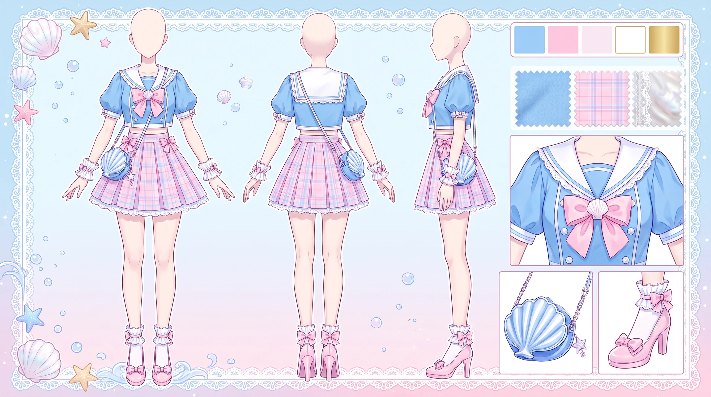
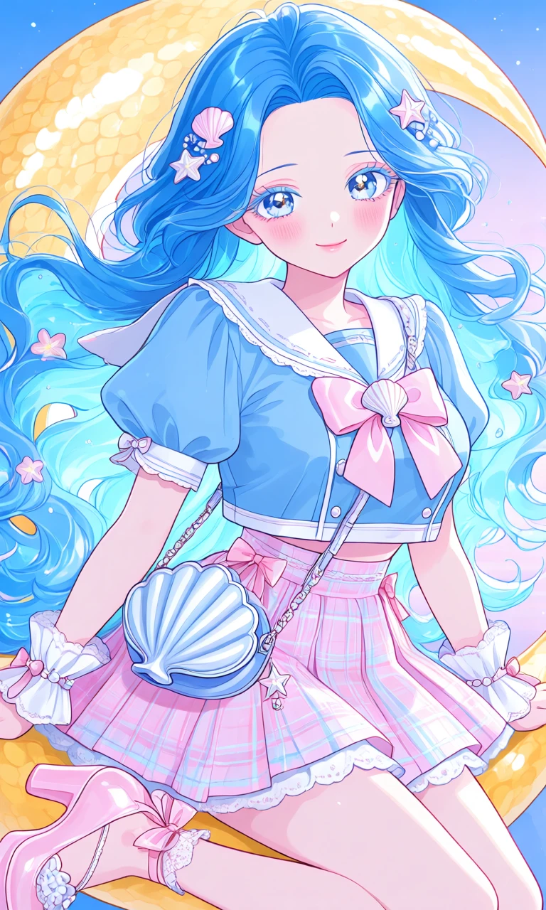
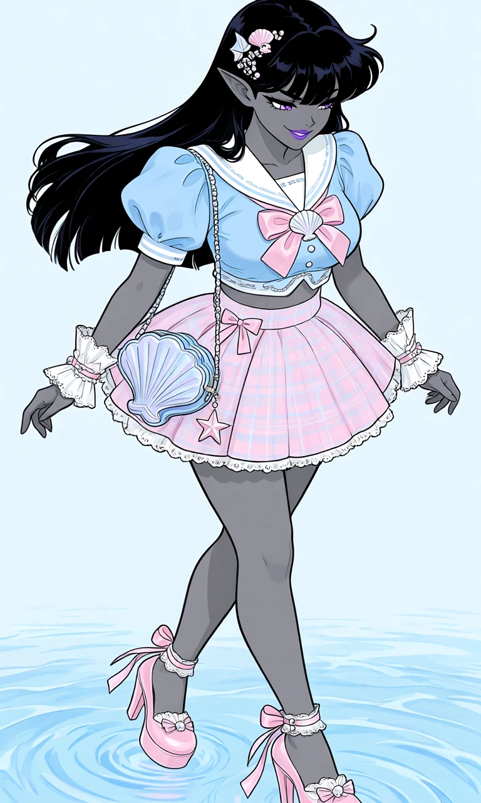

Seashell Sweetheart

Outfit Prompt
Adorable pastel mermaid-inspired sailor idol outfit, romantic ocean-themed fashion, cute feminine styling, playful nautical details, soft light blue, pastel pink, pearl white, and delicate silver accents.
A fitted light-blue cropped sailor top with a short, waist-revealing silhouette, featuring a wide white sailor collar that extends over the shoulders and forms a pointed V-shaped opening at the front. The collar has delicate pastel-blue trim and small decorative white stitching along its edges.
A large pastel-pink satin ribbon is tied into a beautiful bow at the center of the chest, with softly rounded loops and two ribbon tails hanging down the front. A decorative seashell brooch sits at the center of the bow, featuring a pearlescent white shell framed by delicate silver detailing and a tiny pink gemstone.
Short, voluminous puff sleeves made from soft light-blue fabric, with rounded balloon-like silhouettes and gently gathered shoulders. The sleeves end in fitted white cuffs decorated with delicate ruffles and thin pastel-pink ribbon trim.
The cropped bodice is gently fitted around the waist, with a narrow white decorative band along the bottom hem and tiny pearl-like buttons arranged vertically beneath the chest bow.
A high-waisted pastel-pink and light-blue plaid mini skirt with a short, flared A-line silhouette ending at the upper thighs. The skirt features a delicate tartan check pattern combining soft pink, light blue, and thin white intersecting lines.
The skirt has a fitted waistband decorated with subtle white piping and a small pastel-pink bow at one side. Soft, evenly spaced pleats create a playful, gently flared silhouette.
A delicate layer of white frilled fabric peeks out beneath the skirt hem, resembling a soft petticoat. The frills feature scalloped edges and tiny pearl-like decorations, adding a charming ocean-inspired touch.
Pastel-pink platform high heels with thick rounded platforms, tall block heels, and softly rounded closed toes. The shoes feature delicate ankle straps decorated with pastel-pink satin ribbons tied into bows, with additional ribbon tails hanging gracefully beside the ankles.
White frilled trim decorates the edges of the shoes, creating a soft, feminine appearance. Small pearlescent seashell ornaments embellish the fronts of the shoes.
Matching white wrist cuffs made from layered frilled fabric, with softly gathered ruffles, scalloped lace edges, and delicate pastel-pink ribbon bows. Tiny pearl beads decorate the center of each cuff.
A small seashell-shaped handbag made from pearlescent pastel-blue material, featuring a rounded scallop-shell silhouette with delicate ridged detailing. The handbag has a beautiful pearl-beaded shoulder strap and a small silver clasp.
A dangling pastel-pink star charm hangs from the side of the handbag, accompanied by a tiny white pearl ornament.
Hair accessories include several delicate seashell-shaped hair clips in pearlescent white and pastel pink, decorated with small pearl beads and subtle silver details.
A separate pastel-pink star-shaped hair clip features a glossy finish and a tiny white pearl at its center.
Additional small shell ornaments and delicate pearl chains can be arranged throughout different hairstyles, creating a coordinated ocean-inspired appearance without requiring a specific hair color or hairstyle.
The complete outfit combines cute sailor fashion, playful idol styling, pastel plaid fabric, delicate seashell decorations, pearl accessories, soft white frills, and romantic ribbon details.
Sweet feminine mermaid aesthetic, charming nautical-inspired fashion, coordinated pastel colors, delicate ocean-themed accessories, playful cropped silhouette, short pleated skirt, and elegant frilly platform heels.
Outfit Examples



